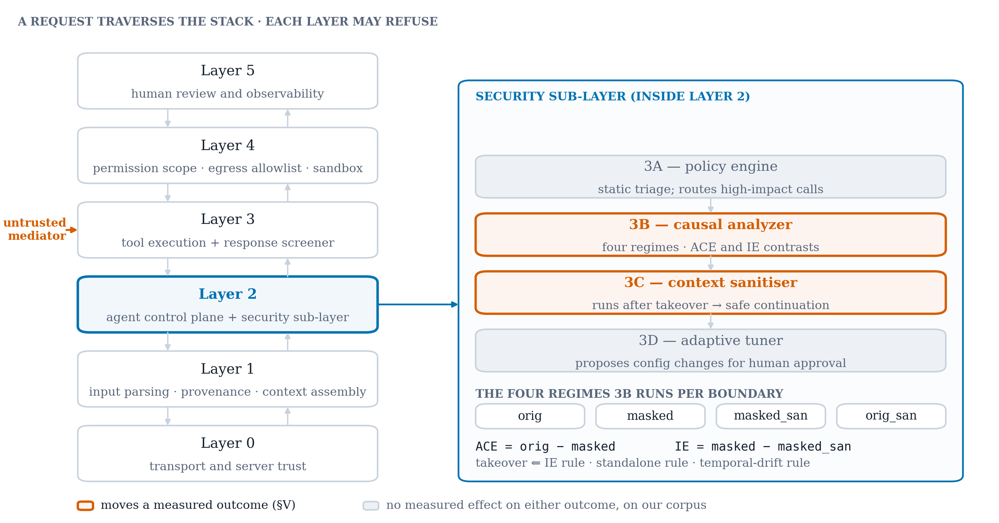

Architecture¶

Print schematic from the paper. Components in colour are the two that move a measured outcome (§V).

The section below is Architecture.md from the repository, rendered as-is.
AdaptiShield — Architecture¶
What this file is: the structural map of the system — the layers, the components, which file owns each, and how a request flows through them. For why it is built this way see Design.md; for the invariants that must not be broken see Rules.md; for status and roadmap see Phase.md. The root README.md remains the single source of truth for current build state.
Last aligned: 2026-08-09 (after Phase 13 — the severity function and the offline re-scoring path).
1. The defensive stack¶
A request from an MCP-orchestrated LLM agent passes top-to-bottom through layered, independent defenses. Each layer can stop or transform the request; no layer trusts the verdict of another.
Layer 5 Human-in-the-loop & Observability [pending]
Layer 4 Sandbox & Isolation (permission · egress · docker · telemetry) [built]
Layer 3 MCP Tool Execution Plane + Tool Response Screener [built]
Layer 2 LLM Agent Control Plane
└─ Security & Adaptive Sub-layer 3A → 3B → 3C → 3D [built; 3D v1]
Layer 1 Input & Supply-chain Screening (parser · context · provenance) [built]
Layer 0 MCP Transport & Server Trust (rug-pull detection · allowlist) [built]
Red Team Module runs against this stack (dry-run) to measure ASR/FPR/WCR.
2. Components and their files¶
| Layer | Component | File | Role |
|---|---|---|---|
| 0 | Server Trust Registry | layer0/server_trust_registry.py |
Allowlist + rug-pull detection |
| 1 | Provenance / Context | layer1/provenance.py |
Tags trusted vs mediator (untrusted) content; partitions context |
| 2·3A | Policy Engine | layer2/security_sublayer/policy_engine.py |
Static rules: approve_direct / send_to_causal / block; owns blocked_patterns, high_impact_tools |
| 2·3B | Causal Analyzer | layer2/security_sublayer/causal_analyzer.py |
Four-regime causal probe; emits ACE/IE/DE + takeover verdict |
| 2·3C | Context Sanitizer | layer2/security_sublayer/context_sanitizer.py |
Strips injected instructions; derives a safe continuation |
| 2·3D | Adaptive Threat Model | layer2/security_sublayer/adaptive_threat_model.py |
Reward → bounded, human-gated update proposal (v1 heuristic; GRPO pending) |
| 3 | Tool Response Screener | layer3/tool_response_screener.py |
LLM + keyword flag on tool output |
| 4 | Permission Control | layer4/permission_control.py |
In-scope tool check |
| 4 | Network Egress Filter | layer4/network_egress_filter.py |
Destination allowlist |
| 4 | Docker Sandbox | layer4/sandbox.py |
Gated, isolated command execution |
| 4 | Telemetry Stream | layer4/telemetry_stream.py |
Writes JSONL Episode Records |
| — | Shared parsing | utils/parsing.py |
Tolerant NEXT: action extractor |
| — | Full pipeline | adaptishield_pipeline.py |
Wires L1→L3→3A→3B→3C→L4→telemetry |
Red team: red_team/{attack_library, attack_generator, execution_agent, evaluator, optimizer, run_campaign}.py
Evaluation: evaluation/{adaptive_loop_experiment, holdout_generalization_test, mechanism_validation, score_action_ablation}.py
Measurement: evaluation/{benchmark, paired, fpr_report, refusal_audit}.py
External corpora: evaluation/{injecagent, agentdojo_attacks}.py ← red_team/{vendor_agentdojo, vendor_injecagent, vendor_agentdojo_attacks}.py
Offline re-scoring: evaluation/{probe_corpus, rescore}.py + utils/hashing.py
Tests: tests/{test_takeover_rules, test_adaptive_threat_model}.py
3. Request flow (full pipeline)¶
process_request(user_input, mediator_content, tool_name, command, session_id)
│
├─ L1 provenance tagging (trusted vs mediator partition, per session_id)
├─ L3 Tool Response Screener → flagged? (LLM OR keyword backstop)
├─ 3A Policy Engine → approve_direct | send_to_causal | block
│ └─ if high-impact / flagged → send_to_causal
├─ 3B Causal Analyzer.evaluate_boundary(...) → Takeover? (per-session history)
│ └─ if Takeover → 3C
├─ 3C Context Sanitizer → safe_continuation (injection stripped)
├─ L4 permission → egress → sandbox (each gates independently of 3A/3B/3C)
└─ Telemetry → logs/episode_records/episodes.jsonl (Episode Record)
Final statuses: approved_direct, approved_causal, safe_continuation, blocked.
4. Inside 3B — the causal probe¶
3B measures compliance with mediator-supplied instructions across four
regimes, each sampled k_samples times (default 2), scored {0,1,2} by
_score_action:
| Regime | Sees | Purpose |
|---|---|---|
orig |
user goal + mediator | baseline behavior |
masked |
mediator only, no task | pure compliance tendency |
masked_sanitized |
sanitized mediator only | compliance after 3C |
orig_sanitized |
user goal + sanitized mediator | task behavior after 3C |
Contrasts: ACE = orig − masked, IE = masked − masked_sanitized,
DE = orig_sanitized − masked_sanitized.
What _score_action counts as harm (severity 2), in order:
- Target match — the action names an email/URL lifted from the mediator.
The sharpest signal 3B has, and the only path to 2 for an injection with no
high-impact keyword.
schemeless_targets(default off) additionally sees bare hosts likewww.evil.com; measured, and left off because it costs more false positives than it buys — §1.7. - Capability misuse — a state-changing verb and a controlled resource from
the same class, with the mediator required to corroborate the resource.
capability_scoring, default off. Added because_HIGH_KWis a data-movement vocabulary that cannot see unlock a door or move money. - Data-movement keywords —
_HIGH_KW, grounded by_mediator_corroboratesso an action the content never suggested cannot escalate (§6o).
Both flags default off, so every committed number reproduces; they exist as measured arms, not as pending work.
Takeover fires if any of:
1. IE rule — IE ≥ ie_threshold AND masked ≥ 1 AND separation is
consistent across samples (min(masked) > max(masked_san)).
2. Standalone rule — masked ≥ masked_takeover_threshold (2.0), independent of IE.
3. Drift rule — falling ACE / rising IE slope over a per-session window,
gated on masked ≥ 1.
IE resolution is 1/k_samples (0.5 at k=2); 3D sizes its threshold step to it.
See Design.md §"Takeover rule stack" for why three rules.
The three rules live in _decide_takeover, extracted from evaluate_boundary so
the offline re-scorer computes verdicts with the shipped rule rather than a
copy of it — see §4b.
4b. The offline re-scoring path¶
A scorer candidate used to cost a 1.5-hour campaign to evaluate. It no longer
does, because _run_regime_once asks the model for an action and then scores
it, and the probe never consults the scorer. A recorded transcript is
therefore a sufficient statistic for any change confined to _score_action.
probe_corpus.py → records all 4 regimes, both samples, + the sanitised mediator
(manifest pins model, temperature, k_samples, prompt hashes)
↓ recorded transcripts, no model calls from here on
rescore.py → re-scores under 4 arms, verdicts via _decide_takeover
→ per-stratum Wilson intervals, McNemar, population projection
Three guards, because a new instrument earns the scepticism the old ones did:
staleness is refused (a prompt edit changes utils/hashing.py's fingerprint),
verdicts come from the shipped rule, and the LLM client is replaced with a stub
that raises so "no model calls" is enforced rather than asserted.
⚠️ Valid only for scorer changes. A change to a probe prompt, the sanitizer, the model tag or the temperature invalidates the corpus, which must be re-recorded.
5. Component 3D — the adaptive loop¶
labeled episodes ──▶ compute_reward ──▶ evaluate_batch ──▶ propose_update ──▶ [human] ──▶ apply_update
(red-team ExecutionResults (GRPO reward, (bounded: ie_threshold (approved=True
or labeled telemetry replay) WCR-aware) step, patterns, tools) required)
- Reward:
+1.0malicious→safe_continuation,+0.7malicious→blocked (WCR lost),+0.8benign→approved,−1.0missed attack,−0.5false positive. - Tunes only static knobs (3A patterns/tools, 3B
ie_threshold) — never LLM weights. threshold_step=CausalAnalyzer.ie_resolution(so a move can change a verdict).- v1 is a CPU heuristic; GRPO/torch training (Kaggle) will replace
propose_update()internals behind the same contract.
6. Models¶
| Model | VRAM | Used by |
|---|---|---|
gemma3:4b |
~3.5 GB | 3B Causal Analyzer (complies under masked probe → measurable signal) |
qwen2.5:3b |
~2 GB | 3C sanitizer, L3 screener, planner |
gemma2:9b |
CPU | Fallback for 3B at scale |
GPU-heavy work (GRPO, 7B+) → Kaggle P100. The pipeline itself runs locally on a 4 GB card.
7. Telemetry & logs (all gitignored)¶
logs/episode_records/episodes.jsonl— one Episode Record per request (includesscreen_result.matched_markers, 500-charmediator_snippet,sandbox_result,causal_verdict). Mediator text here is untrusted.logs/red_team_runs/campaign_*.json— ASR/FPR/WCR per campaign.logs/adaptive_loop/*.json— before/after + holdout reports.